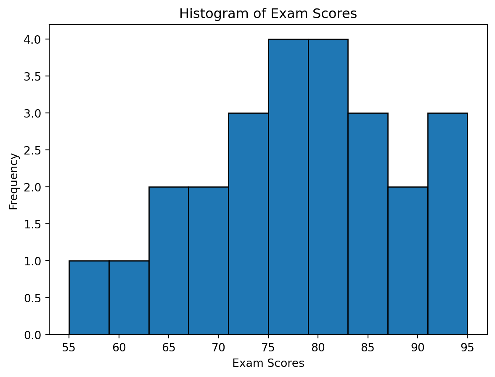
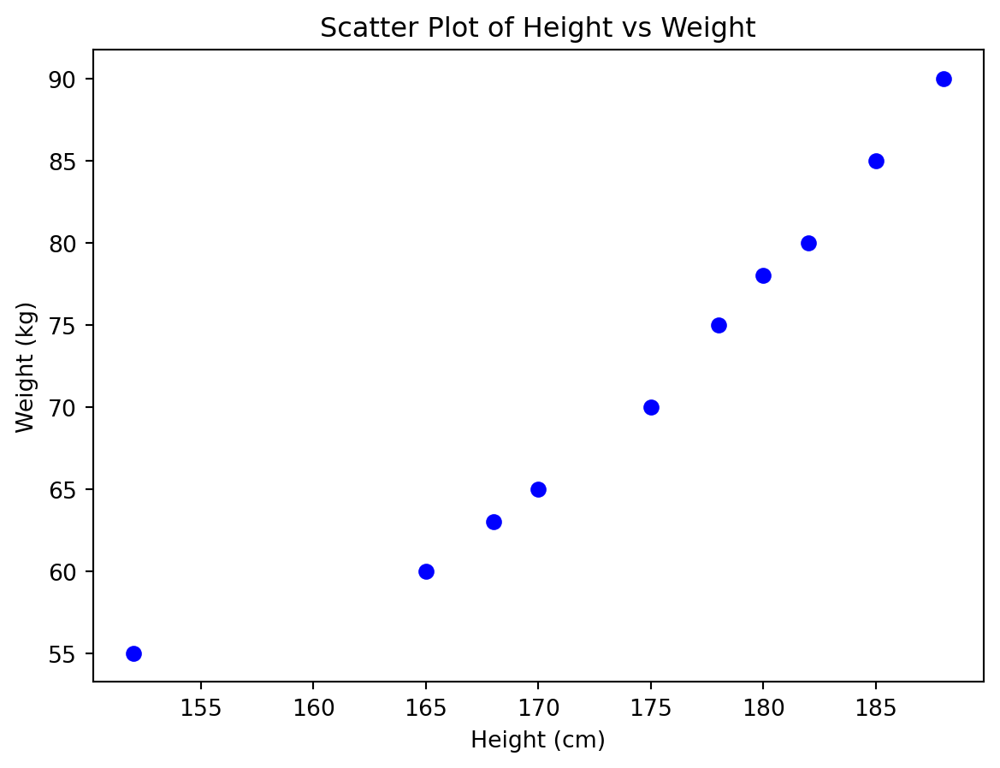
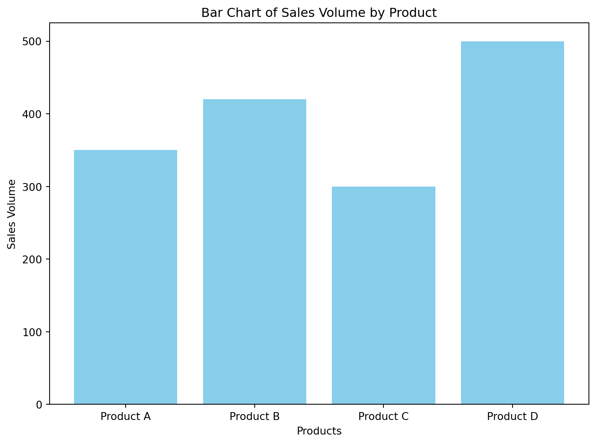
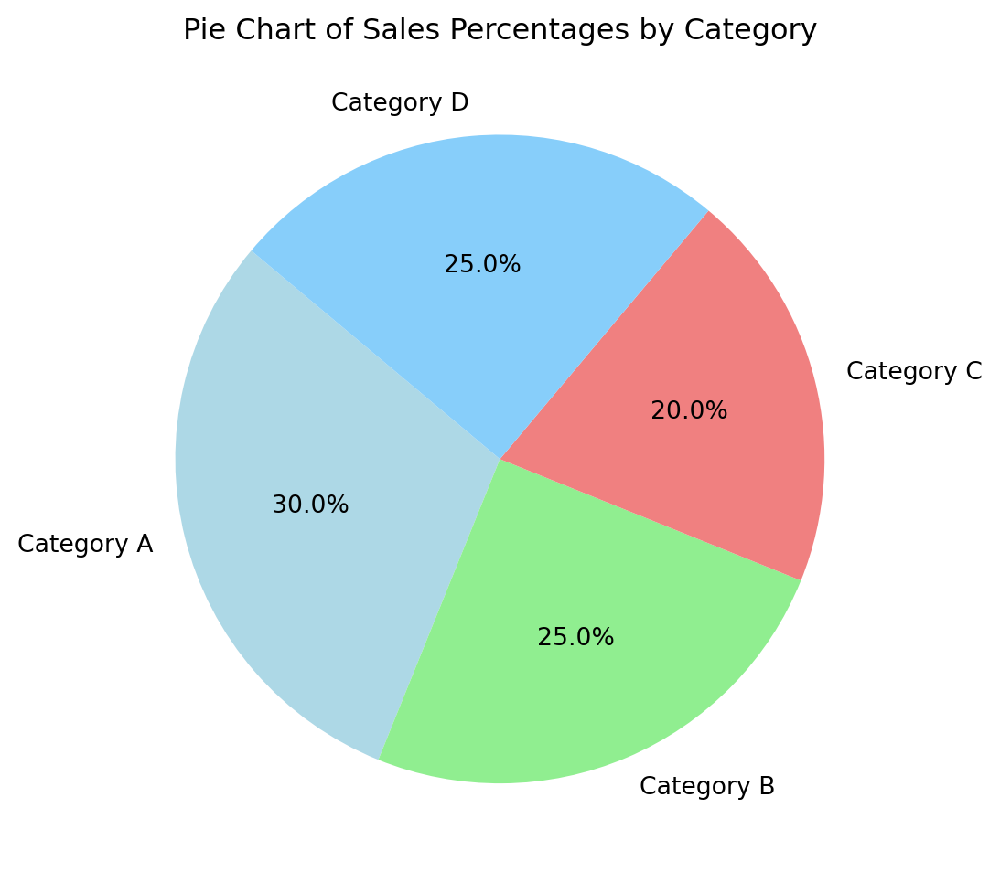
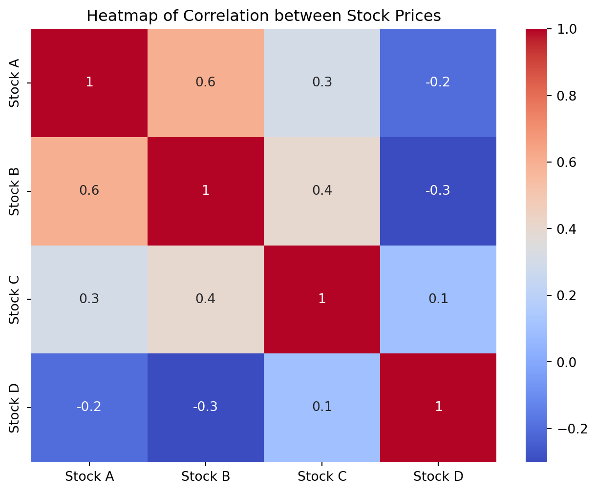
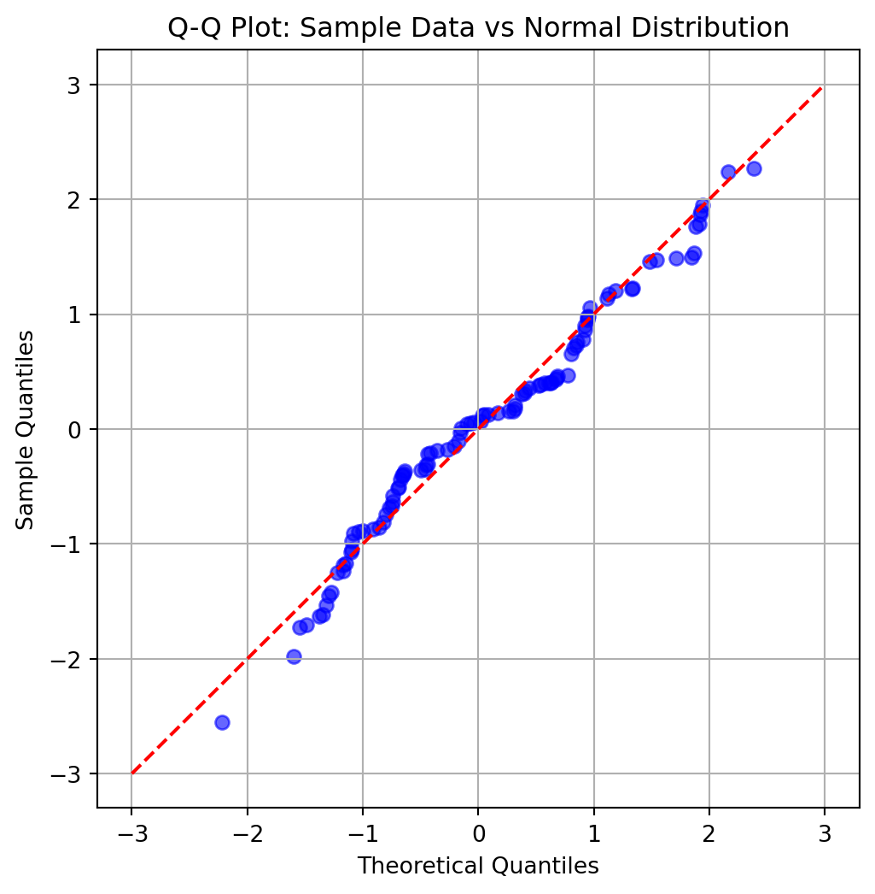
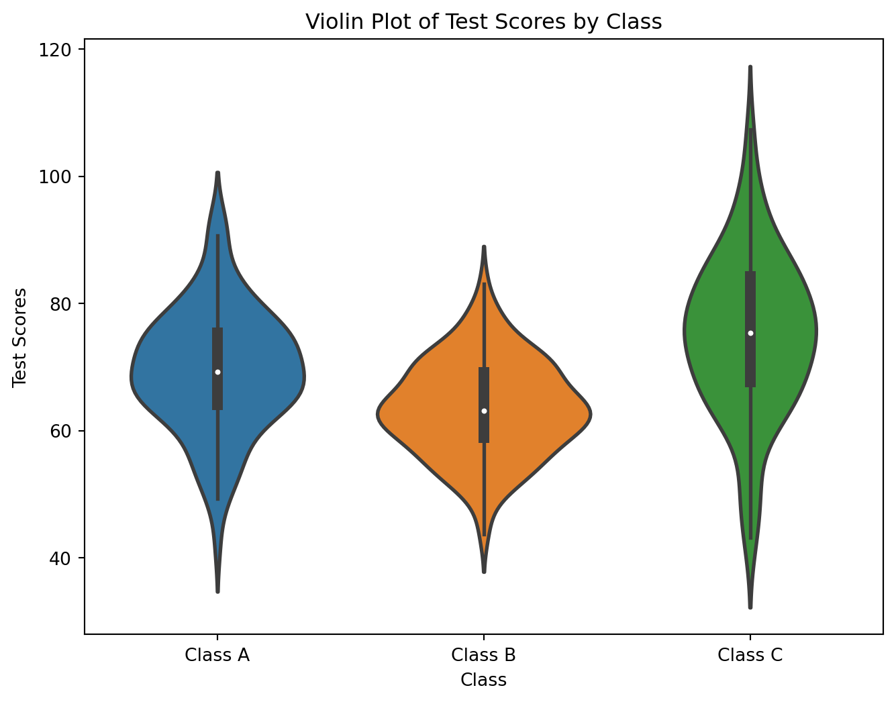

Chapter 3: Data Visualization
Histograms
Definition
Show the distribution of numerical data by grouping data into bins and displaying the frequency of data points in each bin.
Components
Bins: Intervals that divide the entire range of data into series of intervals.
Frequency: Number of data points in each bin.
Types of Histograms
Uniform: All bins have approximately the same frequency.
Normal: Symmetrical, bell-shaped distribution.
Skewed: Asymmetrical distribution, can be left-skewed or right-skewed.
Bimodal: Distribution with two peaks.
Example
A histogram of exam scores might show that most students scored between 70-80, with fewer students scoring below 50 or above 90.
Show the code
import matplotlib.pyplot as plt
import numpy as np
# Example data: exam scores
exam_scores = [68, 73, 81, 84, 79, 65, 72, 91, 88, 78, 55, 60, 75, 82, 95, 70, 77, 83, 79, 87, 93, 63, 76, 72, 85]
# Plotting histogram
plt.hist(exam_scores, bins=10, edgecolor='black')
# Adding labels and title
plt.xlabel('Exam Scores')
plt.ylabel('Frequency')
plt.title('Histogram of Exam Scores')
# Displaying the plot
plt.show()
Scatter Plots
Definition
Show relationships between two numerical variables using Cartesian coordinates.
Components
- Points: Each point represents an observation with its x and y coordinates representing two variables.
Types of Relationships
Positive Correlation: Both variables increase together.
Negative Correlation: One variable increases as the other decreases.
No Correlation: No apparent relationship between the variables.
Example
A scatter plot of height vs weight might show that taller individuals tend to weigh more, indicating a positive correlation.
Show the code
import matplotlib.pyplot as plt
import numpy as np
# Example data: height and weight
height = [152, 165, 168, 170, 175, 178, 180, 182, 185, 188]
weight = [55, 60, 63, 65, 70, 75, 78, 80, 85, 90]
# Plotting scatter plot
plt.scatter(height, weight, color='blue')
# Adding labels and title
plt.xlabel('Height (cm)')
plt.ylabel('Weight (kg)')
plt.title('Scatter Plot of Height vs Weight')
# Displaying the plot
plt.show()
Bar Charts and Pie Charts
Bar Charts
Definition
Represent categorical data with rectangular bars with lengths proportional to the values they represent.
Types
Vertical Bar Chart: Bars are displayed vertically.
Horizontal Bar Chart: Bars are displayed horizontally.
Grouped Bar Chart: Groups multiple bars together to show subcategories.
Stacked Bar Chart: Stacks bars on top of each other to show subcategories within a single bar.
Example
A bar chart showing the sales of different products where each bar represents a product and the height represents the sales volume.
Show the code
import matplotlib.pyplot as plt
# Example data: products and their sales volumes
products = ['Product A', 'Product B', 'Product C', 'Product D']
sales_volume = [350, 420, 300, 500]
# Plotting vertical bar chart
plt.figure(figsize=(8, 6)) # Adjusting figure size
plt.bar(products, sales_volume, color='skyblue')
# Adding labels and title
plt.xlabel('Products')
plt.ylabel('Sales Volume')
plt.title('Bar Chart of Sales Volume by Product')
# Displaying the plot
plt.tight_layout() # Ensures labels fit within the figure area
plt.show()
Pie Charts
Definition
Represent categorical data as slices of a circle, with each slice proportional to the frequency or value of the category.
Components
Slices: Each slice represents a category.
Angles: The angle of each slice is proportional to the relative frequency of the category.
Example
A pie chart showing the market share of different companies, where each slice represents a company’s share of the market.
Show the code
# Example data: sales percentages of different product categories
categories = ['Category A', 'Category B', 'Category C', 'Category D']
sales_percentages = [30, 25, 20, 25]
# Plotting pie chart
plt.figure(figsize=(8, 6)) # Adjusting figure size
plt.pie(sales_percentages, labels=categories, autopct='%1.1f%%', colors=['lightblue', 'lightgreen', 'lightcoral', 'lightskyblue'], startangle=140)
# Adding title
plt.title('Pie Chart of Sales Percentages by Category')
# Displaying the plot
plt.show()
Heat Maps
Definition
Visualize data through variations in color to represent values of a matrix.
Components
Color Gradient: Represents the magnitude of values.
Cells: Each cell represents a value in the data matrix.
Applications
Correlation Matrix: Displaying the correlation coefficients between multiple variables.
Geographic Heat Maps: Visualizing data density or intensity over geographical areas.
Example
A heat map showing the correlation between different stock prices, with darker colors indicating stronger correlations.
Show the code
import matplotlib.pyplot as plt
import numpy as np
import seaborn as sns
# Example data: correlation matrix of stock prices
stocks = ['Stock A', 'Stock B', 'Stock C', 'Stock D']
correlation_matrix = np.array([[1.0, 0.6, 0.3, -0.2],
[0.6, 1.0, 0.4, -0.3],
[0.3, 0.4, 1.0, 0.1],
[-0.2, -0.3, 0.1, 1.0]])
# Plotting heatmap
plt.figure(figsize=(8, 6))
sns.heatmap(correlation_matrix, annot=True, cmap='coolwarm', xticklabels=stocks, yticklabels=stocks)
# Adding title
plt.title('Heatmap of Correlation between Stock Prices')
# Displaying the plot
plt.show()
Q-Q Plots
Definition
Compare the distribution of a dataset with a theoretical distribution by plotting their quantiles against each other.
Components
Theoretical Quantiles: Quantiles from the theoretical distribution.
Sample Quantiles: Quantiles from the sample data.
Interpretation
Points on Line: Data follows the theoretical distribution.
Points Above/Below Line: Data deviates from the theoretical distribution.
Example
A Q-Q plot comparing sample data to a normal distribution might show that the data is approximately normally distributed if the points lie on a straight line.
Show the code
import numpy as np
import matplotlib.pyplot as plt
import scipy.stats as stats
# Generate sample data from a normal distribution
np.random.seed(0)
sample_data = np.random.normal(loc=0, scale=1, size=100)
# Generate theoretical quantiles from a normal distribution
theoretical_quantiles = np.random.normal(loc=0, scale=1, size=100)
# Sort both sets of quantiles
sample_data_sorted = np.sort(sample_data)
theoretical_quantiles_sorted = np.sort(theoretical_quantiles)
# Create Q-Q plot
plt.figure(figsize=(6, 6))
plt.scatter(theoretical_quantiles_sorted, sample_data_sorted, color='blue', alpha=0.6)
# Add a reference line for comparison
plt.plot([-3, 3], [-3, 3], color='red', linestyle='--')
# Add labels and title
plt.xlabel('Theoretical Quantiles')
plt.ylabel('Sample Quantiles')
plt.title('Q-Q Plot: Sample Data vs Normal Distribution')
# Display the plot
plt.grid(True)
plt.show()
Violin Plots
Definition
Combine box plots and density plots to show data distribution.
Components
Box Plot: Shows median, quartiles, and potential outliers.
Density Plot: Shows the distribution shape.
Advantages
Provides more information than a box plot alone.
Useful for comparing distributions between multiple groups.
Example
A violin plot comparing the distribution of test scores between different classes, showing not only the central tendency and spread but also the density of the scores.
Show the code
import matplotlib.pyplot as plt
import seaborn as sns
import numpy as np
# Example data: test scores for different classes
class_names = ['Class A', 'Class B', 'Class C']
class_a_scores = np.random.normal(70, 10, 100)
class_b_scores = np.random.normal(65, 8, 100)
class_c_scores = np.random.normal(75, 12, 100)
# Combining data into a single DataFrame for seaborn
data = {
'Class': ['Class A'] * 100 + ['Class B'] * 100 + ['Class C'] * 100,
'Score': np.concatenate([class_a_scores, class_b_scores, class_c_scores])
}
# Creating violin plot using seaborn
plt.figure(figsize=(8, 6))
sns.violinplot(x='Class', y='Score', data=data, linewidth=2)
# Adding labels and title
plt.xlabel('Class')
plt.ylabel('Test Scores')
plt.title('Violin Plot of Test Scores by Class')
# Displaying the plot
plt.show()/Users/ravishankar/miniforge3/lib/python3.10/site-packages/seaborn/_oldcore.py:1765: FutureWarning:
unique with argument that is not not a Series, Index, ExtensionArray, or np.ndarray is deprecated and will raise in a future version.
